Select your area of interest:
Home* Lap Steel* 3 String Guitar* "Regular" Guitar* Violin* Bass*Banjo* Mandolin* Ukulele* Home Recording* Links
Open Back Banjo:
Traditional & progressive design & construction information
Boucher Early Minstrel Banjo (construction guide on CD & full size plan available)Frank Profitt Mountain Banjo
Bluestem Mountain Banjo Nouveau
Bluestem Artisan Mountain Banjo
Bluestem Open Back Banjo Nouveau
Bluestem Wine Box / Hand Drum Banjo
Open Back Banjo Design Primer
General Banjo Construction Information
Open Back Banjo Setup Guide
“Why can’t I get this thing to play in tune?” (more than you wanted to know about equal temperament)
Bluestem Open Back Banjo (construction guide on CD & full size plan available)
Bluestem Workingpersons 11 Slot Head Open Back Banjo (construction guide on CD & full size plan available)
Bluestem Wood Top Banjo Information (full size plan available)
*****************************************
Bluestem Mountain Banjo Nouveau plan and notes
*****************************************
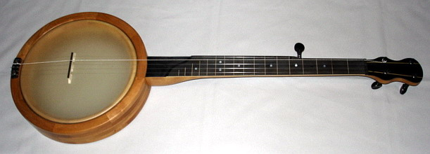
Here is a simple banjo that is loosely based on the traditional mountain style (whatever that may be) in the sense that it has a simplified head tensioning design and friction type tuners, but it also features a few embellishments that make it a bit more user friendly.
The updated 24-1/2" scale design adds flush frets, standard violin pegs, 12" pot, and a simple adjustable head tensioning system utilizing a easy to replace commercially available 10" (or smaller if desired) banjo head. An untrussed neck simplifies construction and makes it ideally suited for nylon strings while the single bolt neck attachment makes for quick and easy adjustment of string height over the fingerboard.
The plan has all of the information necessary to build the instrument, and additional notes about it's construction and modification are detailed below.
Mountain Banjo Nouveau features:
- Simplified design can be built without the use of a lathe.
- Bolt on neck is easy to assemble and adjusts easily for optimal action.
- Larger head diameter than "traditional" mountain banjo design for increased volume and bass response.
- Adjustable tension head design utilizes an easy to replace commercially available high crown banjo head.
- Pot design is easily adaptable to utilize smaller head size if desired.
- 24-1/2" scale and 12" pot diameter retain the feel of a standard open back banjo... you'll feel right at home!
- Neck features Dobson-style heel design and wood flush fret position markers.
- Neck can be built as fretless, half-fretted, or full fretted as desired.
- Tapered ebony violin pegs and nylon strings keep cost to a minimum while ensuring high plunk factor and a cool Appalachian Retro vibe.
- Comfortable total weight of 4 pounds
Click HERE for Bluestem Mountain Banjo Nouveau plan in PDF format.
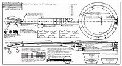
*****************************************
Mountain Banjo Nouveau design notes
When I first started thinking about building a fretless banjo I considered all the fine points of my current instruments and decided I didn’t really want to go the Proffitt style route. My list of desires included real Ebony violin tuners, nylon strings, ebony fingerboard, inlaid flush frets, height adjustable neck to pot joint, larger synthetic head with integral hoop, and a modern tensioning mechanism. I used these criteria to develop the banjo shown here.Another thing I wanted to accomplish was to present this as an instrument that could be easily copied by others without access to a lathe.
The following ideas are presented not as an exhaustive how-to guide, but as a few suggestions on ways to build a banjo without the need to purchase many specialized power tools. There are lots of banjo oriented websites with construction information that you can reference for basic building questions you may have. I have written other banjo construction information, some of which can be found HERE.
I do assume that the builder will have access to a medium sized drill press. A good drill press is at the top of my favorite tools list, which looks something like this:
1. Drill Press (like chocolate cake to me...) I use it more for for planing, jointing, and sanding operations more than drilling.
2. Wagner Safe-T-Planer (used in the drill press, it’s like the butter cream icing for the cake)
3. Band saw, 14” is a good size (you can’t conceive how useful a band saw is until you have one…)
4. Small combination 6” disk / 24” belt sander. (I’ve worn out 3 of these I love ‘em so much…)
5. How can I pick between my miter saw, 5” random orbit sander, or workbench?
You can build the workbench from plans available HERE.
Use whatever tools you have at hand and remember that this is a MOUNTAIN BANJO. A few rough areas here and there can be lived with. This is a great way to introduce yourself to banjo construction AND end up with a really great fretless banjo in the process.
Strive for perfection, learn from your mistakes, and accept and be humbled by your results.
**************** PRINTING THE PLAN ****************
The plan is presented as a PDF file and has been drawn as a full size print. You may use the PDF directly, (all critical dimensions are noted on the plan and PDFs can be zoomed with little loss of detail) or save the file to CDR or flash drive and take it to your local full service print shop to have a FULL SIZE 36" BY 20" plan printed for a few bucks. Make sure that the ACTUAL SIZE of the drawing outer borders printed measure 36” by 20” to ensure they have printed it out correctly for you. The PDF has been taylored to print on 24" by 48" paper, but it can be printed to correct size on any paper 22" by 38" or larger. Your biggest obstacle in this process will be finding someone at the print shop that is familiar enough with their software to get the PDF to print out at the correct size. This will occasionally be a bit of a challenge for them, but that's their job. Make them keep trying until they get it right! They should be able to use their “print preview” window in their printing software to save themselves a little trouble.A full size drawing is nice to have, and eliminates the many steps involved in scaling up a drawing to actual size. A full size print also permits you to place semi-rigid plastic over specific areas and trace over it with a fine point permanent marker to create templates to transfer directly to your work. If you opt to work from the PDF, all of the critical dimensions are noted on the print.
**************** POT DESIGN NOTES ****************
The pot is designed to be of similar size to a conventional rim and utilizes a 10" Remo high crown Fiberskin or Renaissance banjo head, but a readily available 10" Mylar drum head can also be used. I obtained mine from Elderly Instruments. The design is easily adaptable for use with smaller head sizes if a smaller head is desired.The top section of the rim is constructed of two layers with the top layer having a inside diameter sized to match the head.
The bottom section is also constructed of two layers with the bottom layer having an inside diameter to match the inside diameter of the tone/tension ring.
The bottom section of the pot is joined to the top section with 8 screws and the tensioning screws within the propeller nuts are tightened to exert upward force on the inner tone/tension ring to tighten the head.
**************** CONSTRUCTING THE RIM ****************
Rim layers can be formed easily using the method shown. I cut them with a miter saw, but they can be cut by any other means. I cut 8 segments with 22-1/2 degree angles, leaving the last segment with extra length. Seven segments are glued using slightly stretched painter's tape to hold them tightly together until dry. Cut the last segment for a perfect fit, mark the inner, and cut excess material before gluing the final segment in place. This saves a LOT of time when sanding the rim to size. Glue the last segment in place and plane level when dry. I use the Wagner Safe-T-Planer in my drill press, but use whatever method you choose. Cut the outer profile oversize before gluing the layer in place. I always use a few grains of salt on the glue surface to keep layers from sliding when clamping pressure is applied. If your layers are level they can be clamped with pressure exerted from a central point above the rim.The rim construction sequence is as follows:
1. GLUE first (bottom layer) to a 12" diameter circular pattern to serve as a sanding guide. Sand outer diameter to match this form. The inside diameter of this layer is sanded as the last step.
2. GLUE second layer in place and sand outside diameter to match first layer. 3. Drill eight holes through the two bottom layers AND the circular form to house the screws that join the halves together. The screws should slip into the holes easily.
4. SCREW the third layer to the first two with screws inserted from the bottom of the circular form.
5. Sand the third layer inside and outside diameter to match the second layer.
6. GLUE the top layer to the third layer and sand the outer diameter to match the third layer. 7. Sand the inner diameter to its final 10-1/16" dimension. 8. Remove the circular form, join the halves again, and sand the inside diameter of the bottom to its correct dimension.
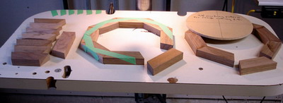
**************** RIM CONSTRUCTION WITHOUT USING A LATHE ****************
Here's an alternative to lathe forming a rim. The pictures should be more or less self-explanatory. The secret is to form a base with a precisely sanded outer diameter. The circular base rides against two guide boards located to the right and to the rear of the base and clamped securely to the drill press table. Slightly oversized segments are glued directly to the base and accurately sanded with an 80 grit drum sander. Adjust the right guide board to control "depth-of-cut". You should take multiple light passes until the desired dimension is reached. Use medium speed and keep your work moving to avoid burning the wood. Cut or plane away the base to reach the inner portion that could not be initially shaped with the sanding drum. Clean up the outside and inside surface with a random orbit palm sander fitted with a 220 grit disk. With a little care you can easily produce a rim that rivals its lathe-turned counterpart. The rims below show how this is done, but are not the actual rim used for this particular project.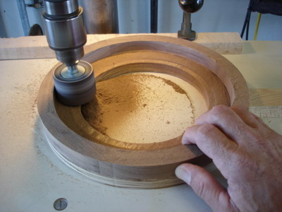
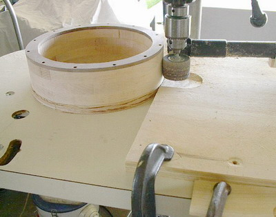
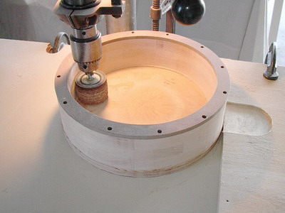
**************** CONSTRUCTION OF THE NECK ****************
The neck can be made in many different ways; I suggest laminating it using 3/4” stock, using 1/2” or 3/4" contrasting wood for a center section if desired. Most 3/4” stock will be slab sawn, so you’ll have the strongest configuration when the laminated neck is sawn out of the finished glue up. Book match the wood’s grain pattern when viewed from the heel end as best possible. This will result in a neck that will resist warping and bowing. If a good hardwood is used you most likely won’t end up with any significant bowing under the low tension of nylon strings, but you can add neck reinforcement if it makes you feel more confident.**************** ADDING A NECK REENFORCEMENT BAR ****************
I commonly use an 18” length of 1/4” thick 2024-T4 aircraft aluminum bar stock that tapers from 3/8” at the nut end to 5/8” at the heel end of the neck in my banjos, but it is not necessary in a well-built nylon strung banjo. Do not use ordinary aluminum bar. If you can flex the bar by hand it is not stiff enough to be effective in preventing neck bow. The bar can be cut easily on the band saw, but avoid overheating the bar when cutting it. The top and bottom edges of the bar must be sanded smooth and flat. The bar is installed by routing a channel that is cut 1/2" deep at the nut end and tapers to 3/4" deep at the heel end. The bar is glued into the channel with a filler strip clamped over its top. The filler strip is finished off to be level with the top surface of the neck after the glue has dried. An example of this type of bar is shown in the photo.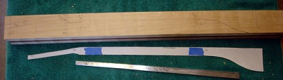
**************** MAKING THE FINGERBOARD ****************
The finger board can be cut from a ebony blank to match the shape of the pattern. Cut the "fret" slots if flush wood position markers or frets are to be added. Glue contrasting wood strips in place for "flush frets" and sand the top surface of the board to level it. Mother of pearl dots can be added as position markers at the indicated positions if desired. Finish the sides to match the profile shown on the plan.**************** FINGERBOARD FLUSH FRETS ****************
An example of how to cut fret slots is shown below. This small tile saw has been retrofitted with a jeweler's slotting blade that cuts a precise .023" slot width for standard frets. If you make a lot of instruments that require frets this saw works beautifully. A fretless neck does not need this kind of precision, and any type of saw can be used to make the slots for flush frets which are filled with a contrasting wood strip. Sand the strips to match the slots, glue them in place, and sand them level with the fingerboard surface.
**************** SHAPING THE NECK ****************
Cut the neck profile out to match the shape shown on the plan. Try and cut the profile as closely as you can to reduce sanding time. Use extra care when cutting the flat area at the rear of the peghead and the thumb stop profile. This will make it easier to easily transition from the rounded portion of the neck when it is shaped with the sanding drum.The neck profiles (cross sections at several fret locations) along the neck are available on the print. Place a flexible sheet of plastic over the guide and trace over the pattern with a fine tip permanent marker. Cut out the areas representing the neck profiles.
One of the easiest ways to shape the neck is to round out the desired shape at the several fret locations using the guide, remove the waste areas between the shaped locations, and finish by refining the areas to eliminate irregularities. Round the heel area and blend the neck into the heel in a continuous smooth transition. A smaller drum sander (3/4” course grit) can be used to profile the thumb stop area. You may wish to practice your first attempt on a scrap piece of lumber. If you error beyond saving, pitch it and start over. After all, it’s just a piece of wood.
The picture shows the first two template locations at fret positions 1 and 3 rounded with the 80 grit sanding drum. The rest of the locations will be rounded in the same manner prior to removing the waste areas between the locations.
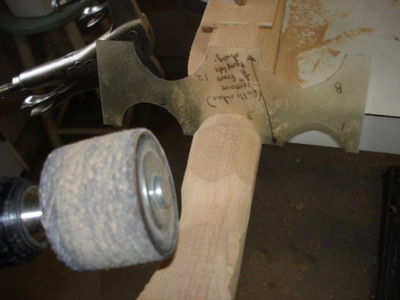
**************** JOINING THE FINGERBOARD TO THE NECK ****************
NOTE: Drill the holes for the barrel bolt and neck attachment bolt and install the barrel bolt BEFORE GLUING THE FINGERBOARD TO THE NECK. If you don't install them now you'll have a plug showing in the top surface of the finger board where the access hole for the barrel nut is drilled.The fingerboard can now be glued in place. After the glue has dried the nut can be placed temporarily in position and the peghead overlay added. The peghead outline can now be cut to shape. The scoop at the heel end can now be added if desired.
Sand the entire neck using a small random orbit sander if available. Start with 150 grit paper and finish with 220 grit.
**************** FORMING THE HEEL PROFILE ****************
Shown below are two of the many ways to form the heel profile. The first picture shows a jig that uses an oscillating spindle sander and easily creates a heel to rim fit that I used to only dream about! Any arrangement that presents the heel to the sanding drum at the correct radius and angle can be used, as shown in the second photo of a drill press based fixture.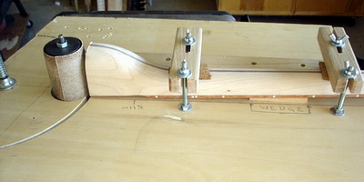
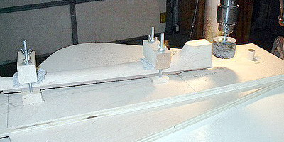
**************** ASSEMBLY ****************
Here is an overview of how everything fits together. The neck bolt is screwed in far enough so the neck is still loose enough to allow the two halves of the rim to be joined together. Place the top portion of the rim face down and position the neck in its proper location with the attachment bolt resting in its proper position. Add the head and tone/tension ring assembly. Make certain that the neck attachment bolt access hole in the tone/tension ring is aligned correctly. Position the bottom portion of the rim and fasten the two halves of the rim together using eight screws. The neck attachment bolt can now be lightly tightened after ensuring that the top of the fingerboard scoop is flush with the top of the rim.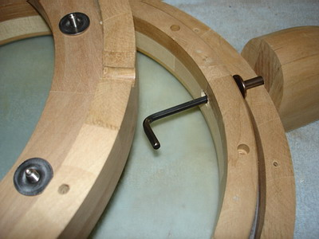
**************** FITTING PEGS TO THE PEG HEAD ****************
The method shown can be used to install any tuner of any type without damage to front veneer overlay or the rear surface. Drill a small dimple where the tuner will go, hold the guide and bit tip against the dimple, and clamp the wooden drill bit guide and backing board in place. Pull the bit out and check centering by looking down the hole with a small flashlight to ensure proper centering before actually drilling the hole. This particular hole is 9/32" for the violin tuners used on this banjo. A tapered reamer is next used to enlarge the holes to match the pegs exactly.
**************** ADDING THE FIFTH STRING PEG ****************
The tuning peg used for the fifth string is made from a shortened standard violin peg. The peg should extend no more than 1" into the neck.The hole for the fifth string peg is drilled slightly less than half way through the side of the neck. The hole can be tapered by “reaming” with the small portion of a new violin peg wrapped in double faced carpet tape and covered with 100 grit sandpaper. I've also successfully used a 5/16" drill bit with the taper ground for the first 1-1/2" of its length. A proper reamer which has been cut off is the correct tool to do this job, but these alternatives are offered for the beginning maker.
Whatever method you choose to use, the hole must be tapered to precisely match the fifth string tuning peg shaft. You should do a dry run in scrap stock to make sure the tapered hole and desired tuning peg shaft length work adequately before drilling your actual neck. Make sure that the peg does not bottom out in the drilled and tapered hole. This would prevent the tuner from holding string tension.
**************** STRING CHOICE ****************
Fretless players vary considerably on their opinion as the proper choice of string. There are advocates of real gut strings, nylon fishing line of various size, commercially available nylon banjo strings, and classical guitar strings. My recommendation is to start with commercially available nylon banjo strings. Elderly Music has a nice selection of strings available. I personally prefer Aquilla Nylgut Classicals on my Fretless banjos when used with my preferred tunings as listed below.If you wish to use nylon classical guitar strings, here are string choices suggested by multiple players from the Banjo Hangout forum:
First string - D'Addario Pro Arte extra hard tension #J4401
Second string - D'Addario Pro Arte extra hard tension #J4402
Third string - D'Addario Pro Arte Composite extra hard tension #J4403C
Fourth string - D'Addario Pro Arte Composite extra hard tension #J4404C
Fifth string - D'Addario Pro Arte extra hard tension #J4401
**************** ATTACHING STRINGS ****************
How to attach strings so they don't slip when tightened. The diagram should be more or less self-explanatory.
**************** TUNING ****************
There are many tunings that can be used on mountain banjo, but I prefer lower tunings than normally found on steel sting banjos. I've found the lower limit to be somewhere in the area of d-G-D-G-A (fifth string to first string). My preferred tuning is e-A-E-A-B (fifth string to first string).**************** NUT VISE ****************
Here is a simple vise that can be used to hold the nut while cutting and shaping slots. It uses a short piece of "fret board" at the front to simulate an actual fret board. A simple eccentric cam at the back locks the nut in place while it is being worked on.If you are using frets, a pencil which has been sanded so only half remains can be used to mark a line on the front face of the nut to use as a reference in determining how deep to cut the initial slots. Stay slightly above this line when preliminarily shaping the slots and do the final fitting on the instrument when the strings are added.
The nut slots are cut to be just above the level of the fingerboard if you are building a fretless instrument.
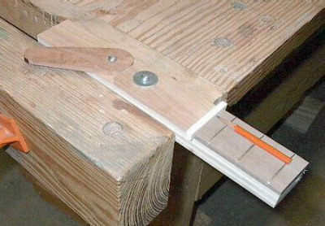
**************** ALTERNATIVE HEAD TENSIONING IDEA ****************
If you wish to experiment with banjo pot construction in the future, here is an alternative head tensioning idea you may want to incorporate into a rim design. This is a tensioner used in a frame drum, but it could easily be used to tension a banjo head. The aluminum block has a slot at the top sized to hold a hex head machine screw nut and prevent it from turning as the screw is tightened. A "tone ring" bent from a 1/4" thick strip of aluminum is shown in the picture. This tensioning system is ultra-simple, adaptable for many uses, and requires no tapping.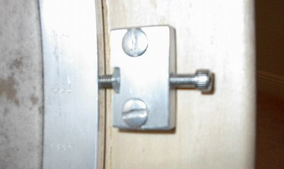
*****************************************
Please visit my other website designed to provide information on musical instrument construction. There are free plans as well as construction tips and techniques available at the present time.
Rudy's Sketchbook of Musical Instrument Plans, Ideas, and Inspiration
*****************************************
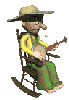
If you desire to contact me about Bluestem Strings products:
Due to scoundrelous spammers actively mining sites for e-mail addresses, I'm forced to include the following text version of my e-mail address meant to confuse the automated robo-search of websites for e-mail addresses. Please e-mail me at:rcordle (substitute the at symbol here) fastmail (substitute the dot here) fm
Please include "Bluestem Info Request" in the subject line, Thanks!